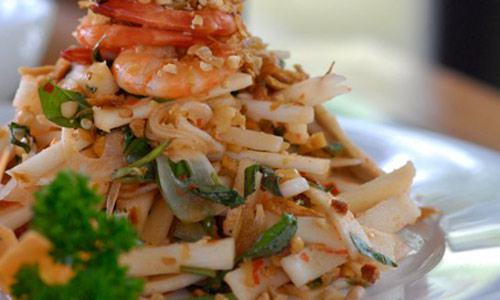

Cùng bắt tay làm thử thôi nào!
1) Khuấy đều nước cốt của 1/2 trái chanh, 3 thìa súp đường, ớt và tỏi bằm vào 4 thìa súp nước mắm như cách pha nước mắm chanh tỏi ớt thông thường (không cho thêm nước).
2) Nấu nước mắm ngon với đường chuẩn bị sẵn (để nguội), tới lúc dùng sẽ múc ra cho thêm chanh và tỏi, ớt bằm.Chan từ từ 2/3 nước trộn gỏi vào hỗn hợp, nếm gỏi, nếu thấy lạt mới cho số nước mắm còn lại vào. Trộn gỏi phải trộn đều nhưng không được mạnh tay, tránh làm các nguyên liệu tiếp tục ra nước.Đi kèm với món gỏi này bao giờ cũng có những chiếc bánh phồng tôm giòn tan, béo ngậy.
Bí quyết:
_ Củ hũ dừa ngoài bắc còn gọi là củ dừa, ở Sài Gòn các mẹ có thể tìm mua ở chợ Phùng Hưng, còn Hà Nội thì ra chợ Hôm xem sao nhé!
_ Muốn củ hũ dừa giòn và không bị thâm, sau khi cắt, ngâm vào nước đá có vắt vài giọt chanh một thời gian (đừng ngâm trong nước muối).